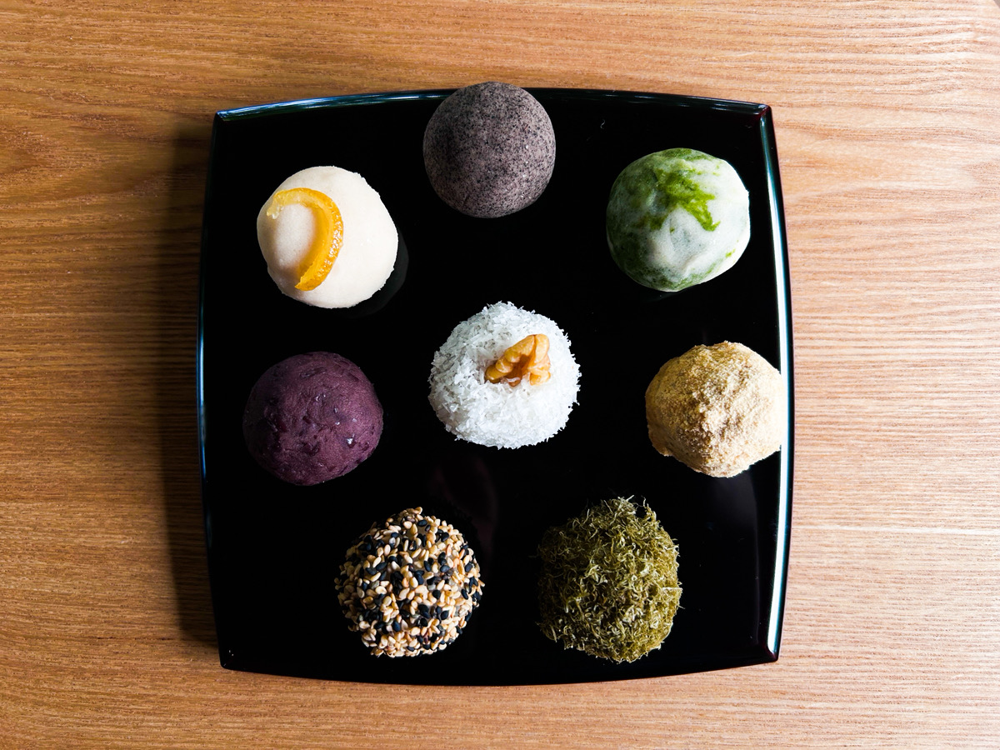
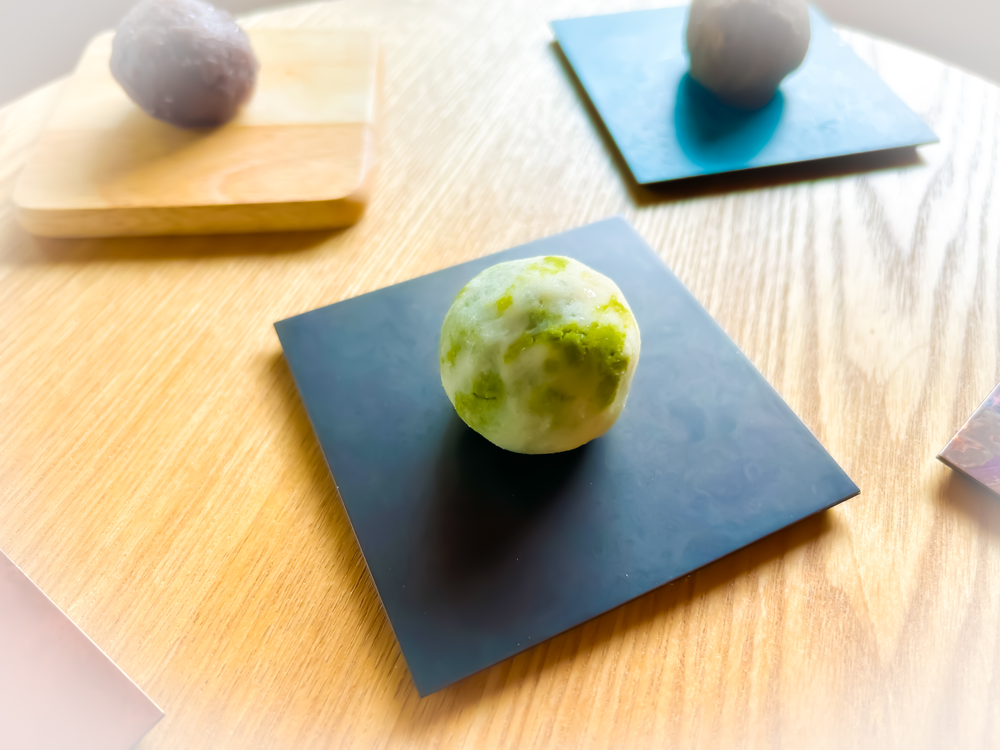
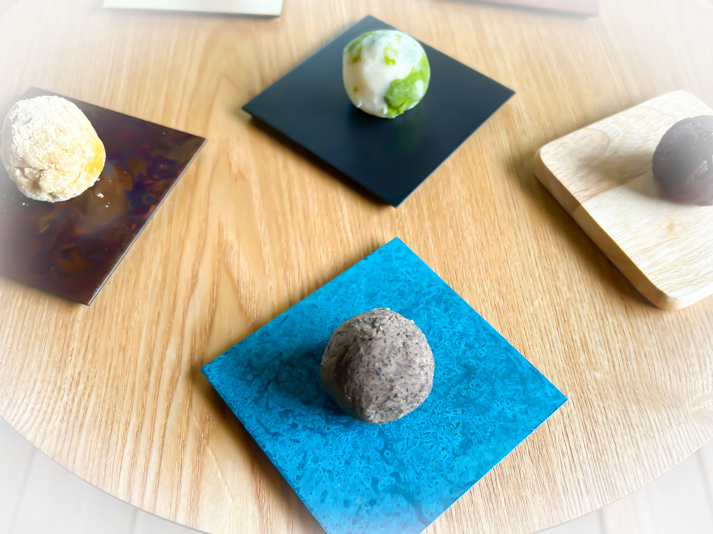
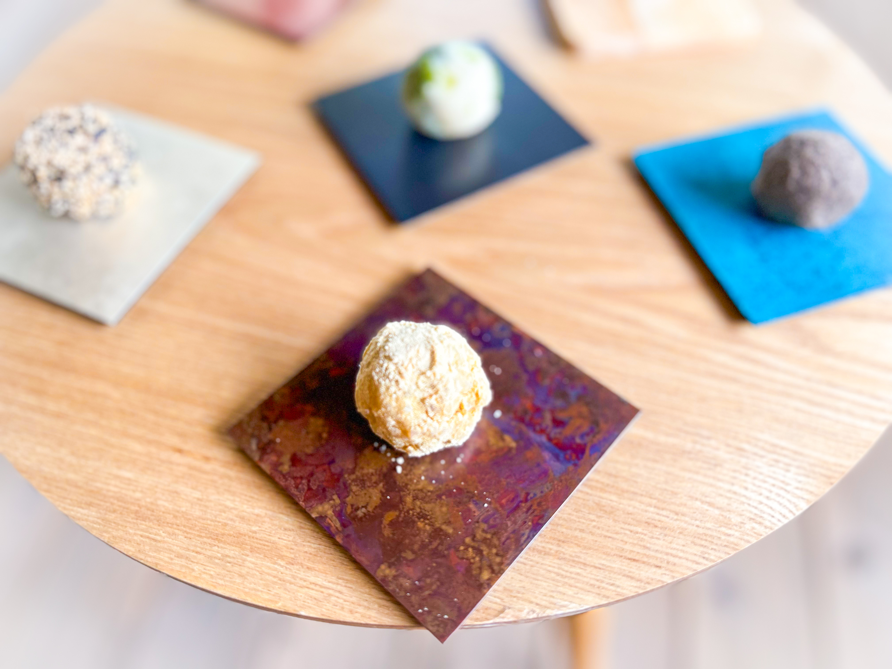
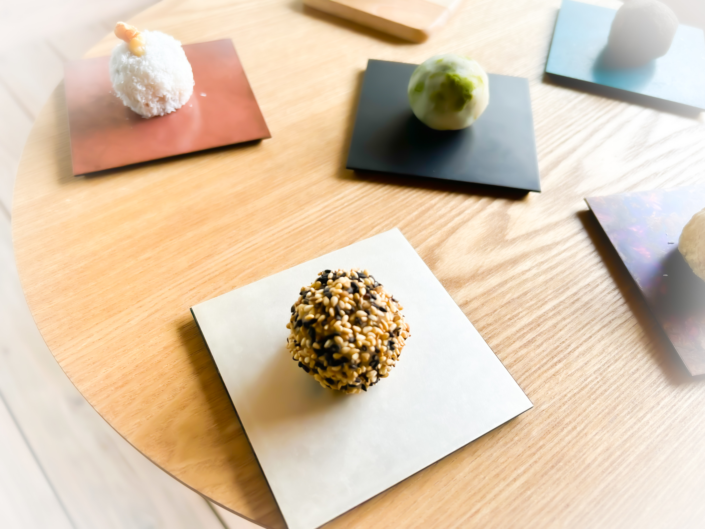
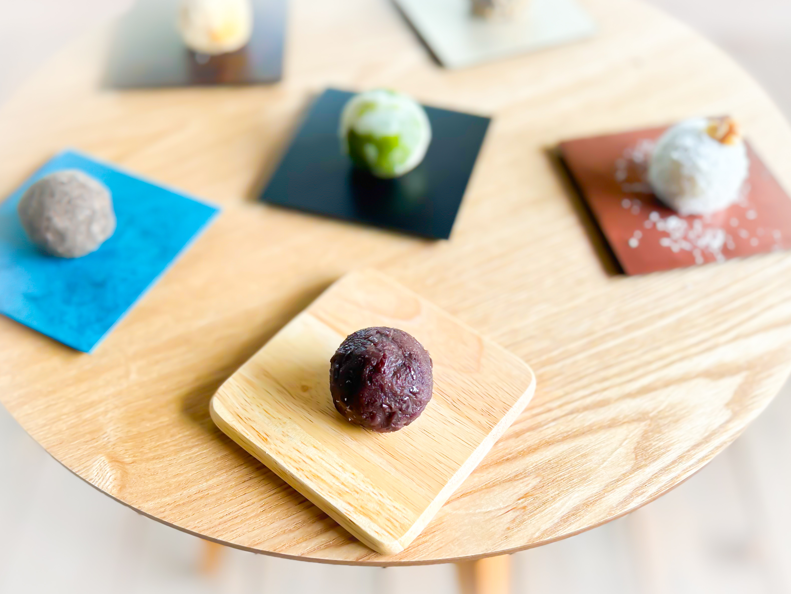
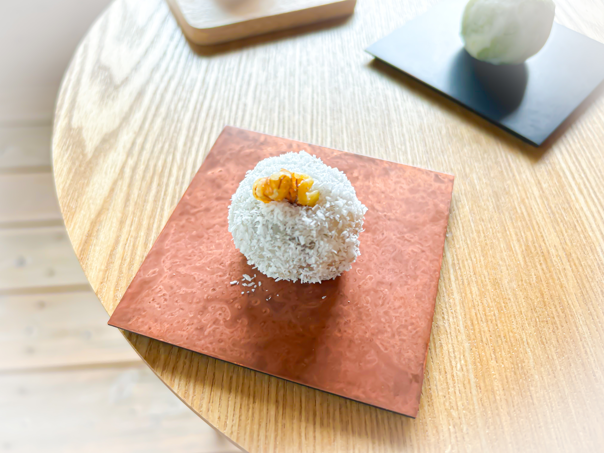
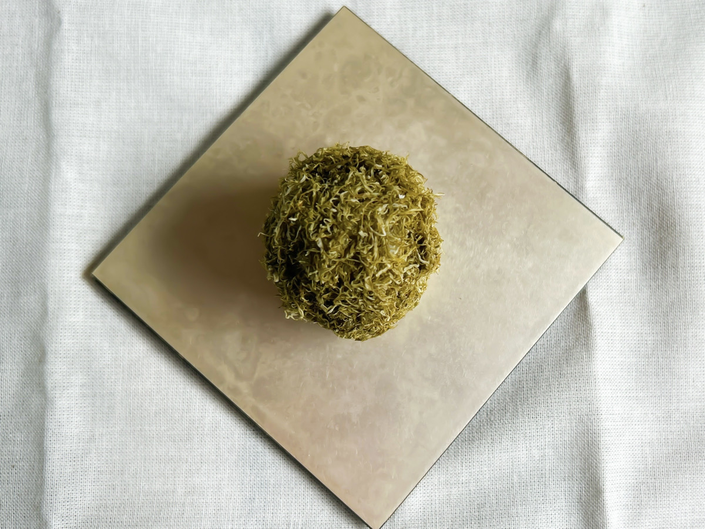
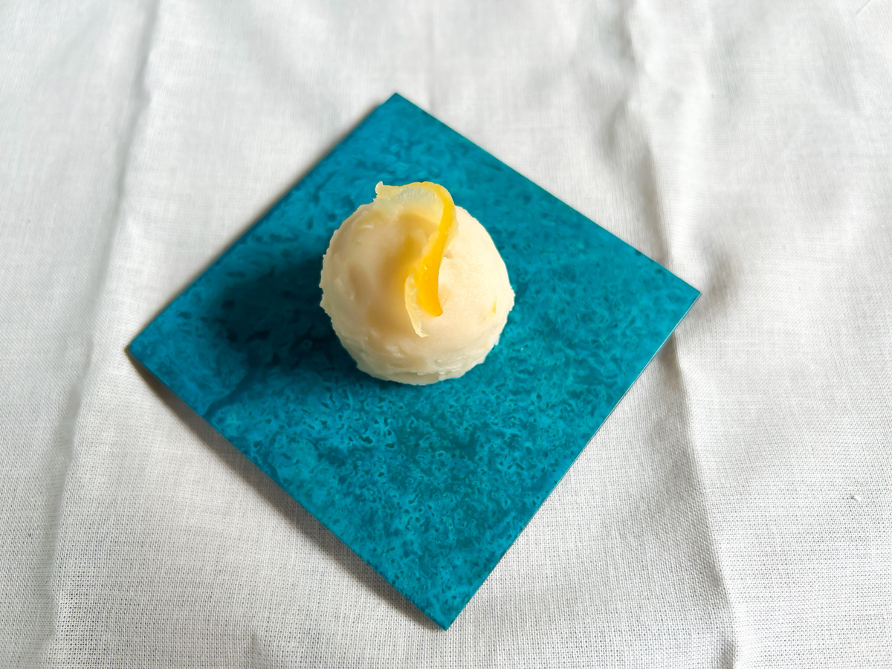
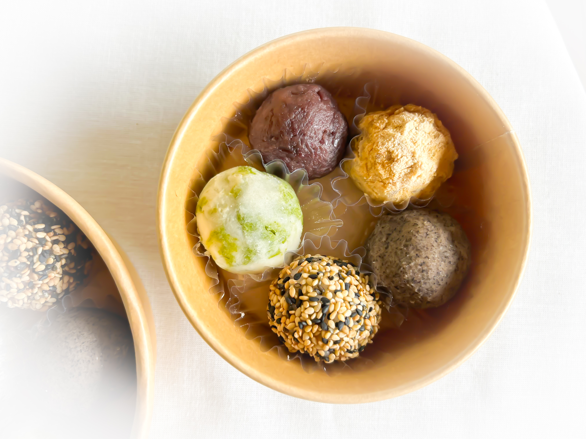

やわらかな光のような、
小さなおはぎ丸いひと口のおはぎ
やわらかな光のような、
小さな丸いひと口のおはぎ
やわらかな光のような、
小さな丸いひと口のおはぎ
やわらかな光のような、
小さな丸いひと口のおはぎ
やわらかな光のような、
小さな丸いひと口のおはぎ
想い
ご縁があり、富山県朝日町へ移住してきました。
海と山が近く、季節の移ろいを身近に感じられるこの町で、
あたたかな人たちに支えられながら暮らしています。
移住してから、
この土地の食材や風景、人のやさしさに触れるたびに、
「いただいたものを、何か形にして返していきたい」
と思うようになりました。
昔から、お彼岸になるとおはぎを作る時間が、
私にとって大切な時間でした。
約20年前の春のお彼岸に兄が亡くなってからは、
おはぎを作る時間が、
静かに兄を想ぶ私なりの供養にもなっています。
ひとつひとつ手を動かしながら、
誰かを想ったり、季節を感じたりする。
そんな時間の延長に、
おはぎ屋 乙 があります。
この町への感謝と、
日々の小さなやさしさを込めて、
ひとつひとつ丁寧にお作りしています。
食べてくださる方の、
ほっとできる時間につながれば嬉しいです。
おはぎの種類
-

ひすい
ヒスイ海岸の翡翠を思わせる、抹茶あんのおはぎです。 自家製抹茶あんが、程よい苦みを引き立てます。
-

バタバタ茶
朝日町伝統の発酵茶を自家製白あんに練りこみました。 唯一無二な香りをお楽しみください。
-

きな粉
朝日町産大豆のきなこが香る、素朴でやさしい味わいのおはぎです。
-

ごま
二色のごまの香ばしさとコクが広がるおはぎです。
-

あんこ
きび糖でじっくりと仕立てた、自家製あんの滋味深い味わいです。
-

ココナッツ
ココナッツの香りをまとい、くるみを添えた、風味豊かなおはぎです。
-

とろろ昆布
富山ならではの味わいをおはぎに。とろろ昆布の塩味とあんこの甘みが口の中で溶け合う、癖になるおいしさです。
-

レモン（夏季限定）
国産レモン果汁を100％使用し、爽やかな香りと優しい酸味が白あんによく合います。夏だけの限定味です。
商品紹介
-

5個入り
やさしい甘さと香ばしさが広がる、一口おはぎの詰め合わせです。 あんこ、きなこ、ひすい、バタバタ茶、ごまの5種類を少しずつ楽しめるよう詰め合わせました。 それぞれ異なる風味を味わいながら、ほっと心ほどけるひとときをお楽しみいただけます。
-
8個入り
あたたかな光のように、華やかさと楽しさを詰め込んだ一口おはぎの詰め合わせです。 定番のあんこやきなこをはじめ、ひすい、バタバタ茶、ごま、ココナッツ、とろろ昆布、レモンまで、8種類の味わいを詰め合わせました。 それぞれ異なる風味や食感を少しずつ楽しめる、彩り豊かな一箱です。ご家族やご友人と分け合いながら、お気に入りの味を見つけていただけます。
- ★ BASEショップでは冷凍お届け
- ★ 冷凍・常温いずれでも直接お渡しが可能です
- ★ 事前のご予約をおすすめします
- 冷凍でお届けの場合は、常温で4時間ほど解凍してからお召し上がりください。
- 解凍後はその日のうちにお楽しみください。
- その他、状況に応じてできる限り対応いたしますので、
お気軽にお声がけください。